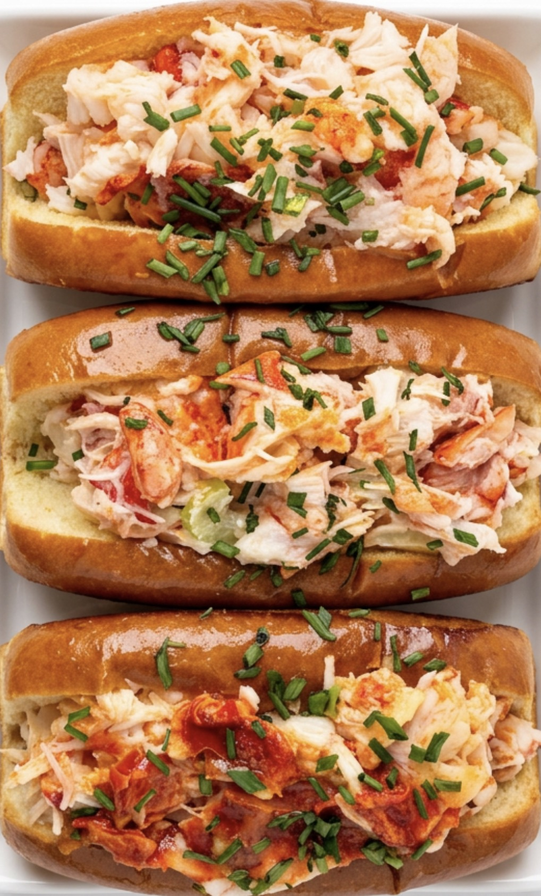
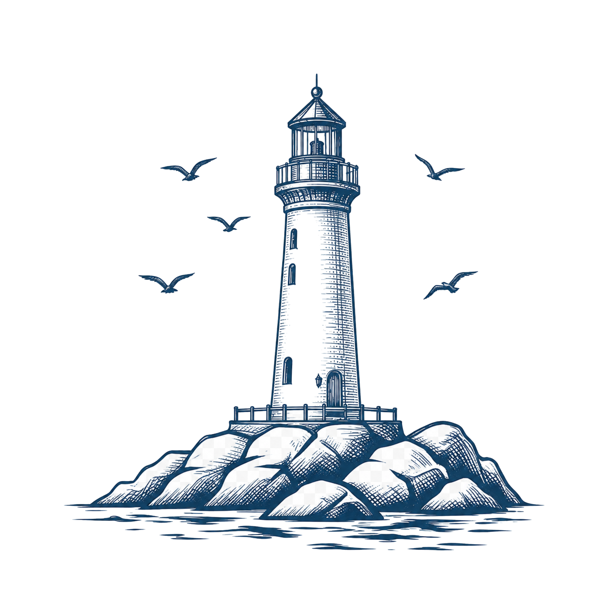
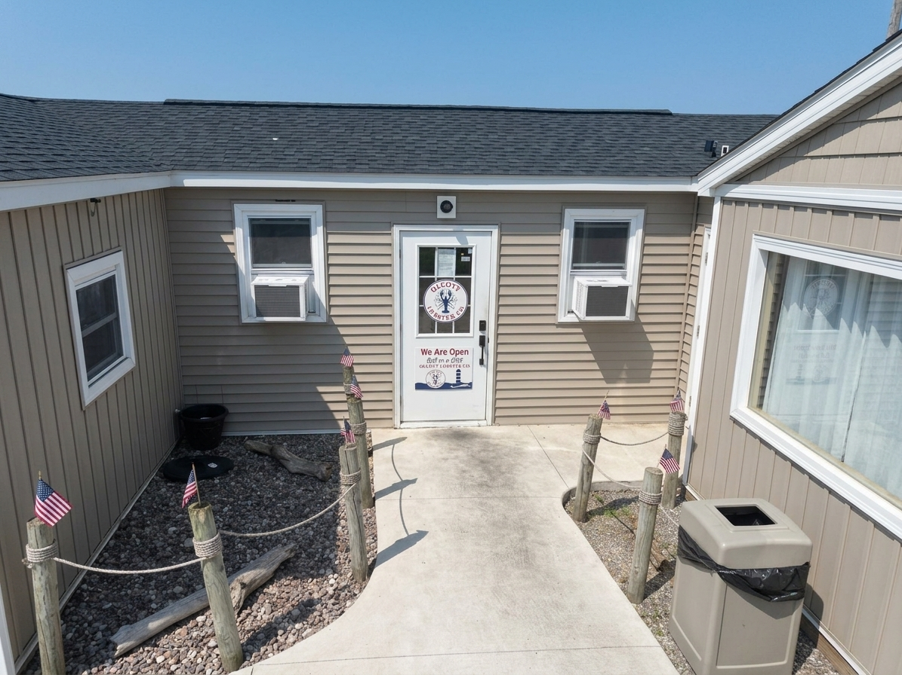
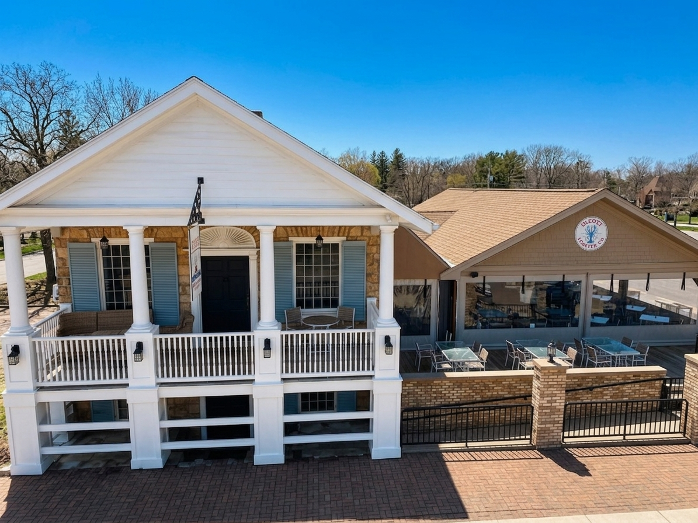
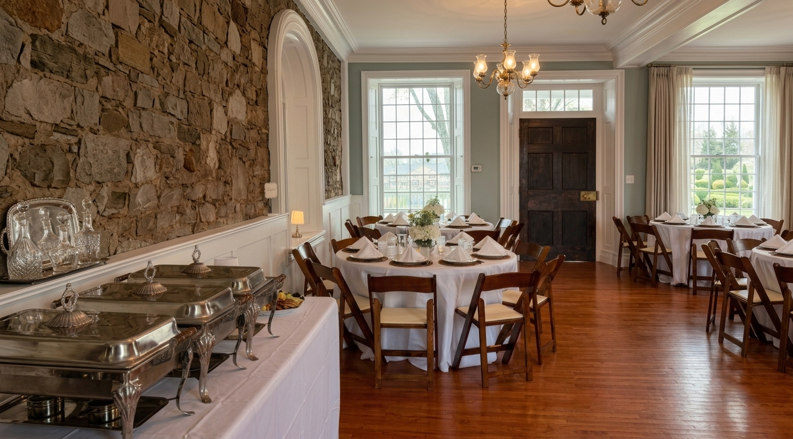

Dockside Rolls
Harbor Classic, Beacon Butter and the signature Signal Fire.
North Coast lobster house
Coast-inspired rolls, bold dockside flavor and two unforgettable fictional stops.
View Menu
Roll In And Chill
The signature order
Can’t pick just one? Meet all three house styles in the lobster-roll flight.
A cool, creamy dockside favorite.
Warm, buttery and straight to the point.
A peppery house roll with a bold kick.

Choose your experience

Harbor PointThe original waterfront stop
Waterfront lobster-shack energy with an easygoing North Coast atmosphere.
Fictional waterfront locationConcept location · No public hours
Location Concept
Old Town LandingA bigger night out
A character-filled gathering place with a full bar, live music and private events.
Fictional historic-district locationConcept location · No public hours
Location ConceptGood food. Good tunes.
Summer sounds and easygoing gatherings bring extra energy to both locations. Check the live schedule before heading out.
Harbor Point
Imagined seasonal performances with the water as the backdrop.
Concept programmingOld Town Landing
A fictional evening-music series in the heart of the old town.
Concept programmingBoth locations
A portfolio concept for food specials, music and waterfront gatherings.
Sample event series
The Lantern Room · Old Town Landing
A fictional private-dining concept for celebrations, rehearsal dinners, showers, birthdays and gatherings beneath the old town lights.
View Concept DetailsOur fictional story
Docklight Lobster House is an imagined North Coast restaurant built around coast-inspired lobster rolls and casual days by the water. The story begins at the Harbor Point shack, then grows into Old Town Landing with live music, a full bar and room to gather—all while staying playful, welcoming and centered on the food.